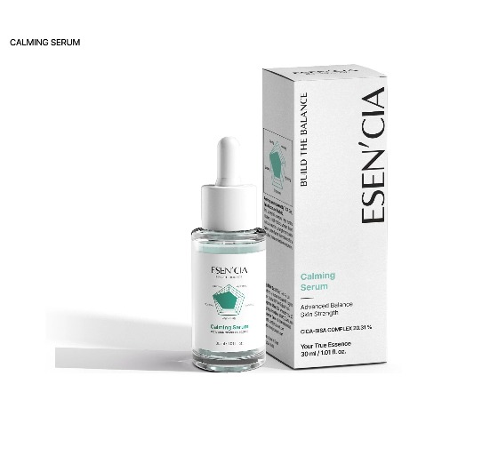
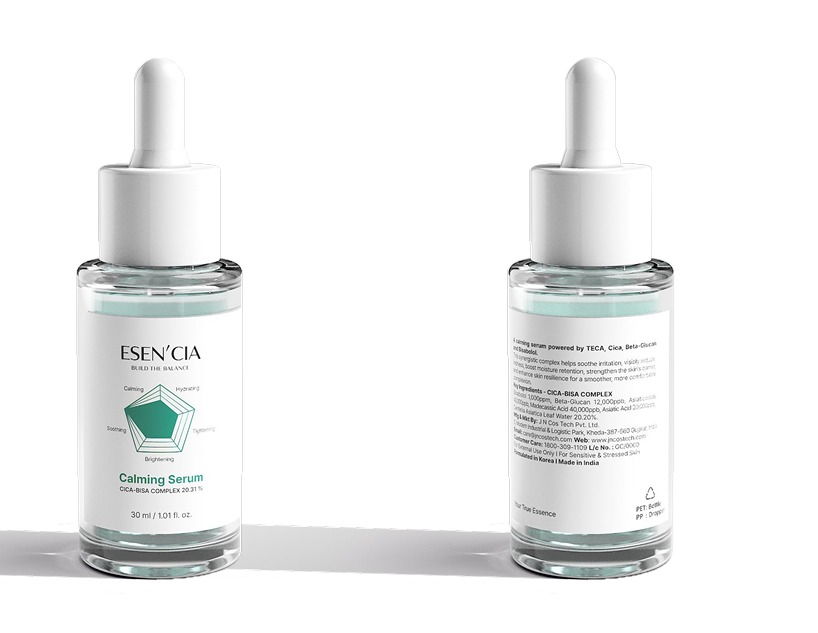
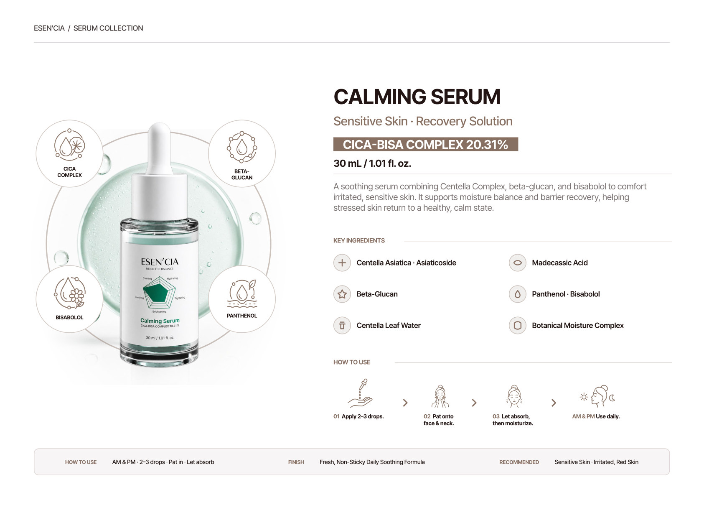

Calming Serum
Soothe + balance + comfort.
A soothing serum positioned around Centella Complex, beta-glucan and bisabolol.
View marketplace content ↗Soothe
Designed around the primary concern represented by this formula.
CICA-BISA COMPLEX™ 20.31%
A named active complex used in the supplied ESEN’CIA product materials.
Targeted, not complicated.
Apply after cleansing/balancing and before moisturizer, following the final product directions.
The formula, decoded.
Ingredient highlights below are based on the supplied ESEN’CIA product materials and are not a substitute for the final INCI list.
Every active has a job.
The collection is organized around targeted complexes rather than one-size-fits-all treatment. The goal is a focused routine with a clear reason for each serum.
Centella Complex
Key ingredient highlighted in the supplied product materials.
Beta-Glucan
Key ingredient highlighted in the supplied product materials.
Bisabolol
Key ingredient highlighted in the supplied product materials.
Allantoin
Key ingredient highlighted in the supplied product materials.
Keep the ritual simple.
Use the serum according to the final packaging directions. Layer thoughtfully, listen to your skin and adjust frequency when needed.
Final INCI, usage directions, warnings, testing language and claims should be confirmed against the production formula and applicable cosmetic requirements before launch.